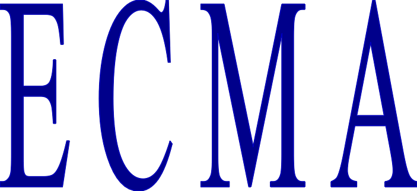

Keith Burnett wrote a Moon circumstances calculator after reading my S&T 2000 article.
Peter Girard has suggested the creation of an ECMAScript code library for astronomical algorithms.
An idea I've had is to write a BASIC (which dialect: GWBASIC, QBasic, etc?) to ECMAScript translator, written in ECMAScript or Java. One could paste BASIC code into a text area on a web page, and have ECMAScript and HTML code generated on the fly. This would make the BASIC code on Sky & Telescope's web site available as interactive programs. Or, it could generate a listing, making Peter Girard's idea of a code library easier to achieve.
Here's a JavaScript quiz app I wrote for my daughter's primary school class more than a decade ago: Olympic Quiz.
Here are some general JavaScript, JScript, and ECMAScript links.